강점은 확실하고, 다시 오게 하는 장치가 비어 있습니다
네이버와 인스타, 지금 이렇게 보입니다
| 항목 | 지금 | 손님 입장에서 |
|---|---|---|
| 업체 사진 | 7장 (낮 외관 1장, 빈 홀 6장) | 분위기와 음식이 잘 안 보임 |
| 메뉴 | 25개 중 사진은 절반, 주류는 0개 | '사케바'인데 어떤 술이 있는지 모름 |
| 예약 · 문의 | 네이버 예약 없음, 톡톡 없음 | 회식 예약하려면 전화뿐 |
| 소식 | 1건 (오픈 안내) | 새 소식이 없어 다시 볼 이유가 없음 |
| 리뷰 답글 | 0건 / 26건 | 남긴 리뷰에 반응이 없음 |
| 쿠폰 | 알림받기 쿠폰 있음 (리뷰 시 음료 1) | 좋은 출발점, 재방문용으로 확장 가능 |
| 인스타 | 사진 1장짜리 9개, 릴스 0, 하이라이트 0 | 계정에 들어와도 분위기를 알기 어려움 |
이 상권은 같은 사람이 자주 오는 곳입니다
건물과 주변
- 테라타워는 2,128여 호실 중 약 380개가 상가이고 나머지는 사무실인 대형 지식산업센터입니다 (언론 보도 기준).
- 기숙사 252실, 주차 2,007대, 주변 아파트 단지까지 매일 같은 사람이 오가는 상권입니다.
- 무료 주차 5시간, 단체석 10~38명, 룸 2~4명은 회식 수요에 딱 맞는 조건입니다.
리뷰가 보여주는 것
- "동네에 오뎅바가 생겨서 좋아요", "이틀 뒤 또 방문", "오픈하고 벌써 n번째"
- 밀가루 없는 오뎅, 국물, 쿠시카츠, 가라아게, 음악, 빔프로젝터 야구 중계가 칭찬받고 있습니다.
- 11월부터 2월까지는 오뎅과 연말 회식 시즌이라 단골을 만들기 가장 좋은 시기입니다.
그래서 광고로 새 손님을 계속 끌어오기보다, 한 번 온 손님을 한 달에 한 번 더 오게 만드는 쪽이 매출에 더 크게 남는다고 봤습니다.
처음 본 순간부터 단골이 될 때까지
먹음직한 사진, 주류 메뉴, 첫 방문 혜택, 답글로 "여기 가보자"를 만듭니다.
테이블 QR로 네이버 '알림받기'를 누르게 합니다. 다시 연락할 통로가 생깁니다.
톡톡 메시지와 소식으로 '다음 방문 혜택', '이달의 메뉴'를 보냅니다.
보틀 키핑, 스탬프, 회식 예약 혜택으로 떠나지 않고 동료를 데려오게 합니다.
핵심은 네이버 톡톡 연결입니다. 톡톡이 연결돼야 알림받기 고객과 최근 방문 고객에게 쿠폰과 소식을 보낼 수 있고, 알림받기 고객에게는 네이버 앱 알림도 갑니다. 지금은 연결돼 있지 않아 1순위로 제안드립니다.
프로모션 아이디어
할인 폭과 금액은 원가와 마진을 보시고 정하시면 됩니다. 아래 숫자 자리는 모두 예시입니다.
- 테라타워 입주사 사원증이나 명함 확인 시 적용
- 네이버 예약에 '팀회식 단체석(10~38명)' 상품 개설
- 무료 주차 5시간, 빔프로젝터, 단체석을 한 장에 안내
- 회식 후 '다음 회식 쿠폰' 전달
프리미엄 사케 "○○○" ○○% 할인
- 17:00~18:30 입장 손님 대상
- 생맥주, 하이볼, 오뎅 1꼬치 중 하나를 혜택으로
- 인스타 스토리로 "오늘 얼리버드 자리 있어요" 안내
생맥주·하이볼 ○,○○○원 할인
- 네이버 메뉴에 주류를 사진과 함께 등록 (지금 0개)
- '이달의 사케' 1병을 정해 소식과 인스타로 소개
- 회식·예약 손님에게 조건부 할인으로 연결
- 다 못 마신 병은 보틀 키핑으로 다음 방문 이유 만들기
예약 손님 ○○% 할인
- 지금 있는 알림받기 쿠폰(리뷰 시 음료 1) 유지
- 테이블마다 QR 안내로 알림받기 유도
- 월 1회 톡톡 메시지로 '다음 방문 쿠폰' 발송 (2주 안에 사용)
- 매달 한정 오뎅이나 안주 1가지
- 인스타에 이미 쓰신 "하루 3개 한정" 같은 표현을 네이버 메뉴 이름에도 적용
- 소식과 톡톡으로 알려 매달 새로 올 이유 만들기
- 방문 스탬프 (예: 5회 방문 시 오뎅 모둠)
- 사케·위스키 키핑 시 이름표와 보관
- 키핑한 술은 단골이 다시 오는 가장 확실한 이유
할인은 실제로 받는 정가를 기준으로 표시하는 게 안전합니다. 회식, 예약, 얼리버드처럼 조건을 붙이면 '할인받는 느낌'은 살리면서 마진은 지킬 수 있습니다.
계산대도 단골을 만드는 도구로
요즘 많이 쓰는 토스 단말기와 네이버페이 커넥트는 결제만 하는 기계가 아니라, 결제하는 순간 손님을 기억하고 리뷰와 쿠폰까지 이어주는 기계입니다.
| 토스 (토스 포스 + 프론트) | 네이버페이 커넥트 | |
|---|---|---|
| 단골 관리 | 포인트·스탬프 적립, 손님을 첫 방문 / 예비 단골 / 단골 / 뜸한 손님으로 자동 분류 | 멤버십·스탬프 자동 적립은 업데이트 예정 |
| 재방문 쿠폰 | 첫 적립 환영 쿠폰, 뜸한 손님 쿠폰, 생일 쿠폰 자동 발송 (알림톡) | 네이버 플레이스 쿠폰을 결제할 때 바로 적용 |
| 네이버 리뷰 | 결제 시 손님 휴대폰으로 리뷰 작성 링크 발송, 리뷰 보상 설정 | 결제 직후 영수증 없이 단말기에서 바로 키워드 리뷰 |
| 그 밖에 | QR 테이블 오더 (메뉴 추천으로 추가 주문, 홀 응대 부담 감소), 특정 상품 적립 제외 | 플레이스 플러스 배지 연계, 매출 '우리 가게 리포트', 미니 키오스크 |
| 비용 | 포스 앱 무료, 프론트 월 사용료 0원. 기기값·설치비는 대리점 계약에 따라 다름 | 대리점 상담. 일부 기능은 연동 포스에서만 사용 가능 |
오덴야에는 이렇게 쓰면 좋습니다
- 계산할 때 전화번호로 적립하면 그 손님이 자동으로 '단골 명부'에 쌓입니다.
- 45일 넘게 안 온 손님에게 '이달의 오뎅' 쿠폰이 알아서 나갑니다.
- 팀회식 결제 손님에게는 다음 회식 쿠폰을 바로 보냅니다.
- 프리미엄 사케·위스키는 적립에서 빼서 마진을 지킵니다.
제안
- 단골 만들기가 목표라면 지금 되는 기능 기준으로는 토스가 더 잘 맞습니다.
- 네이버 커넥트는 리뷰와 네이버 배지에 강하고, 단골 기능은 준비 중입니다.
- 두 대를 같이 두기보다 하나를 고르는 게 운영이 편합니다.
- 지금 쓰시는 포스와 카드 계약을 먼저 확인하고, 두 곳 상담으로 기기값과 조건을 비교해 보시길 권해드립니다.
사진은 이렇게 만들거나 찍어야 합니다
대표님이 올리신 사진을 바탕으로 AI로 연출 예시를 만들어 봤습니다. 음식 종류, 그릇, 담음새는 그대로 두고 조명과 배경, 김, 술잔만 바꿨습니다.
메뉴 사진
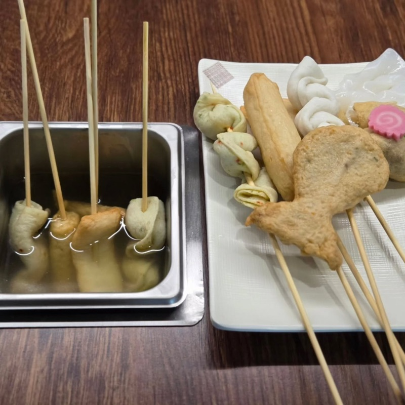
지금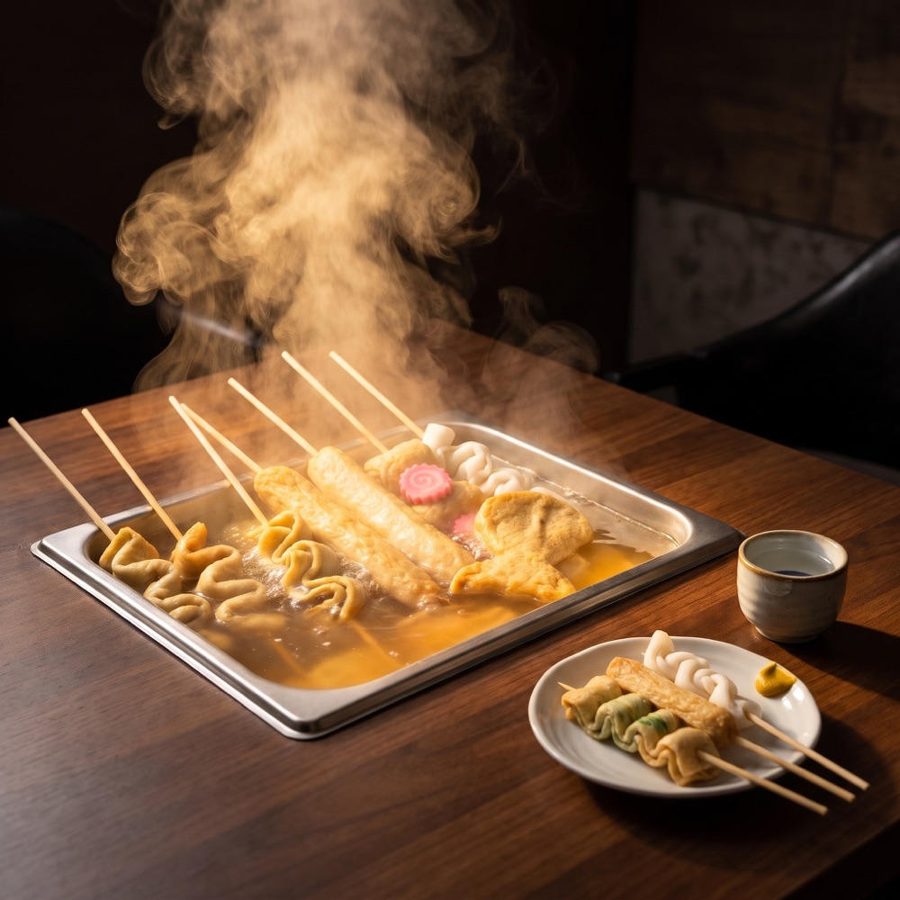
AI 예시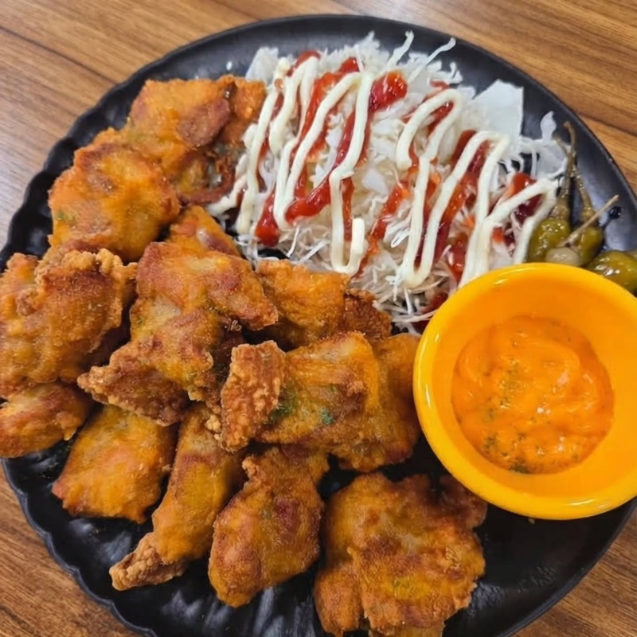
지금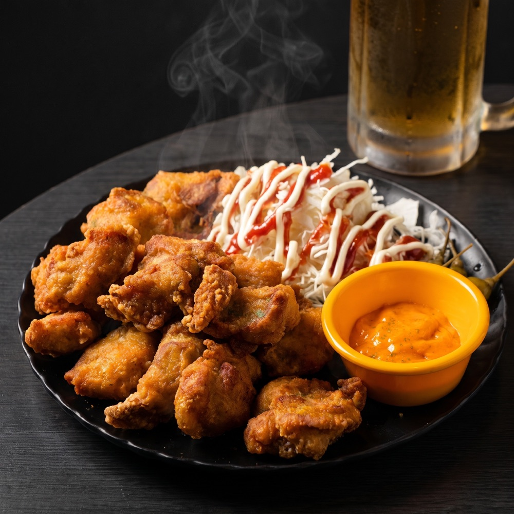
AI 예시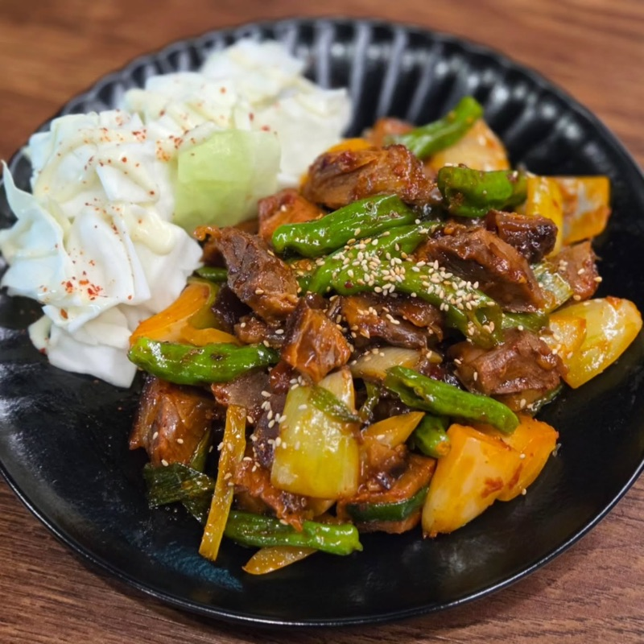
지금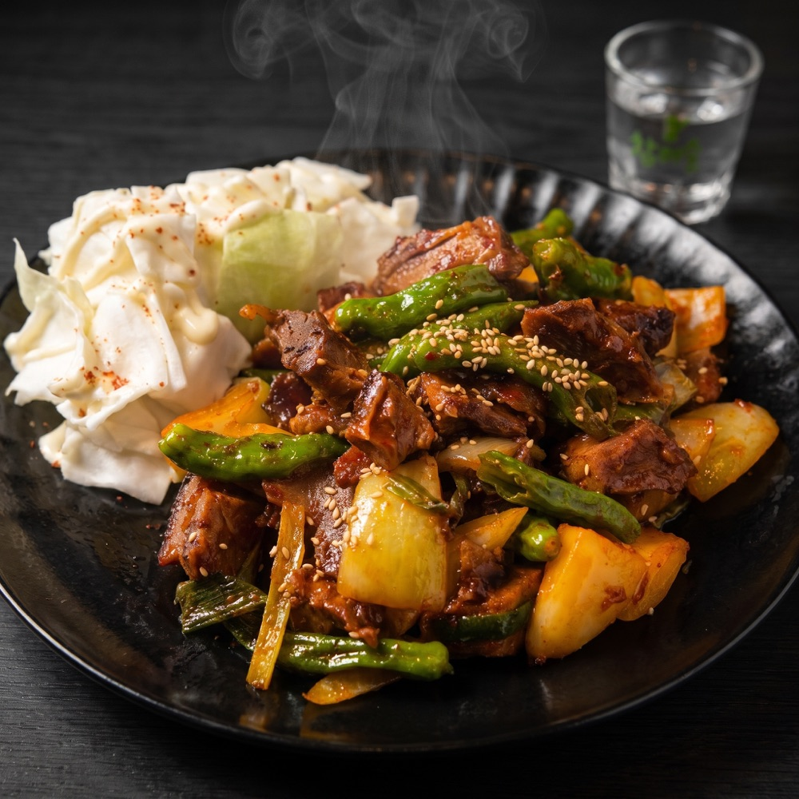
AI 예시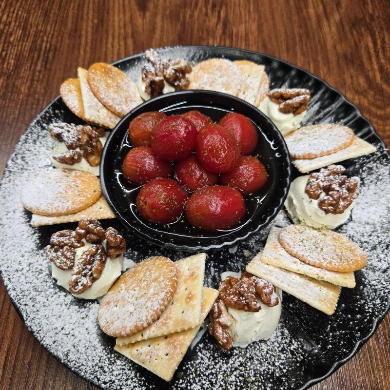
지금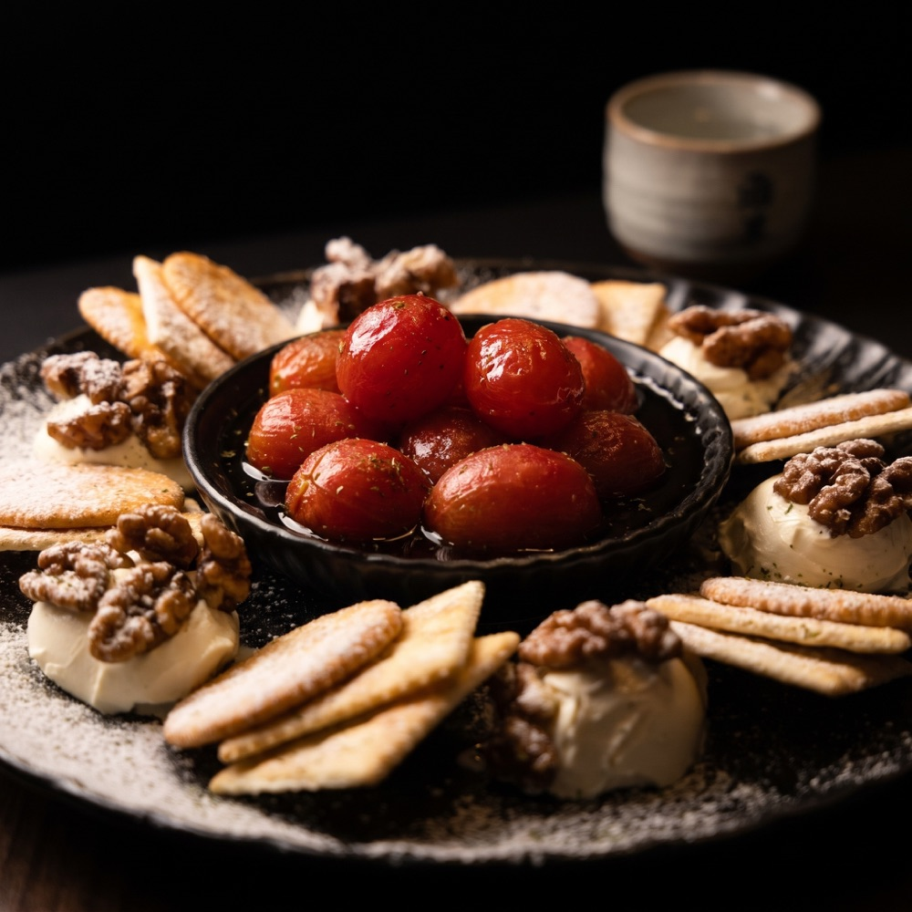
AI 예시매장 사진: 빈 홀 대신 손님 있는 저녁
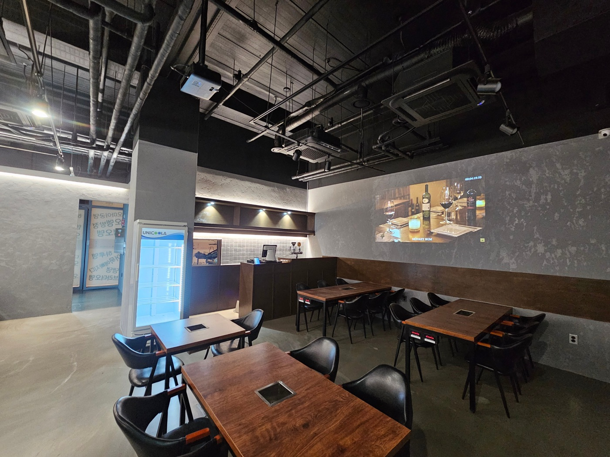
지금금요일 저녁 퇴근 회식: 테이블마다 김 나는 오뎅, 생맥주를 나르는 직원, 빔프로젝터 야구 중계.
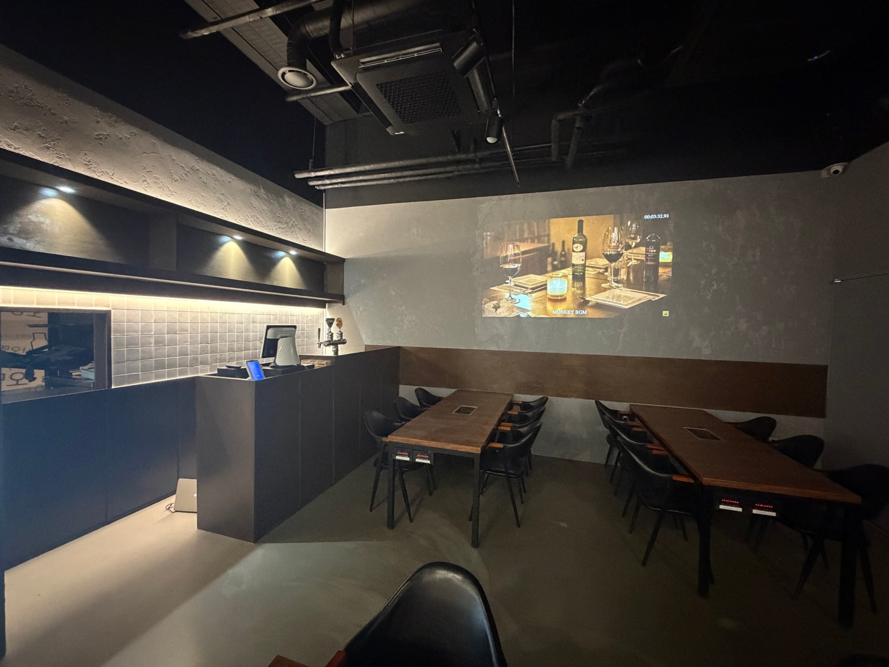
지금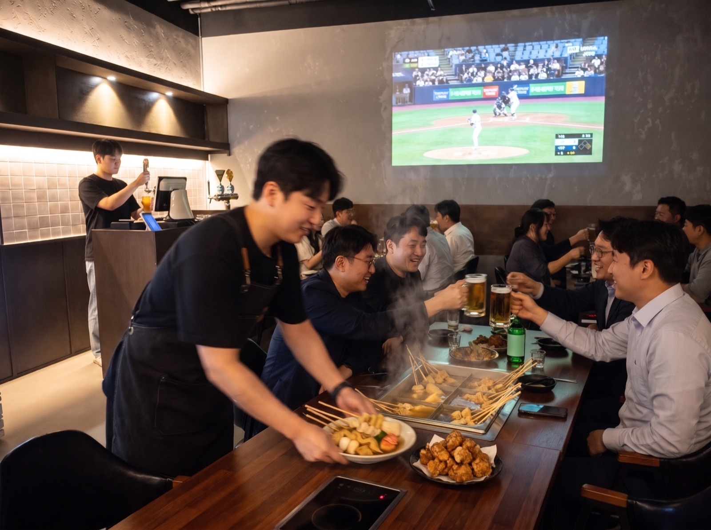
AI 예시팀회식 서빙 장면: 건배하는 손님과 오뎅을 내려놓는 직원, 생맥주를 따르는 바.
직접 찍을 때 체크리스트
- 저녁에, 매장 조명 아래에서
- 배경은 어둡게, 빛은 옆에서
- 뜨거운 메뉴는 김이 오를 때 바로
- 45도 정도 비스듬히, 술잔을 같이
- 바쁜 날 손님 동의를 받고 사람 있는 장면
- 직원 손이 나오는 서빙 컷
꼭 있어야 할 사진 목록
- 불 켜진 밤 간판과 입구
- 김 나는 매립형 오뎅 테이블
- 단체석(38석) 회식 세팅, 룸
- 사케·위스키 진열과 잔
- 빔프로젝터 야구 중계
- 주차장 입구와 1층 위치 안내
메뉴 사진은 실제로 나가는 음식과 구성·양이 같아야 합니다. 사진과 다르면 "사진이랑 다르다"는 리뷰로 돌아옵니다. 손님이 나오는 장면은 방향을 보여드리는 AI 예시이고, 실제 게시용은 이 구도를 참고해 매장에서 찍는 것을 권해드립니다.
이렇게 정리하면 좋겠습니다
- 톡톡 연결 + 0507 스마트콜 · 다시 연락할 통로와 통화 기록 확보
- 네이버 예약 열기 · 일반석 / 룸(2~4명) / 팀회식 단체석(10~38명)
- 소개글 다시 쓰기 · 밀가루 없는 오뎅과 매일 우린 육수, 테라타워 1층, 무료 주차 5시간, 회식·대관, 아이 동반 가능
- 찾아오는 길 · 건물 이름 두 가지(한강DIMC테라타워, 현대테라타워)를 같이 적고, 주차 방법 안내
- 메뉴 · 주류 전체 등록, 오뎅 모둠 세트, 모든 메뉴 사진, "하루 3개 한정" 같은 이름
- 사진 20장 이상 · 위 07번 목록대로
- 소식 주 1회 · 이달의 사케, 한정 메뉴, 회식 예약 안내, 휴무 안내
- 리뷰 답글 · 밀린 26건부터, 이후 주 2회
- place+ 연결 · POS를 연결하면 인기 메뉴와 붐비는 시간이 검색 화면에 보입니다 (현재 무료)
피드는 처음 온 사람용, 스토리는 단골용
피드 · 처음 들어온 사람
- 고정 게시물 3개: 대표 메뉴, 매장 분위기, 위치·주차
- 하이라이트: 메뉴 / 리뷰 / 팀회식 / 오시는 길
- 주 2~3회, 릴스 위주 (김 나는 오뎅통, 회식 현장)
- 해시태그 4개 고정 (#다산술집 #다산오뎅바 #테라타워맛집 #다산회식)
스토리 · 단골에게 "오늘 갈 이유"
- 오늘의 한정 메뉴 남은 수량
- 얼리버드 자리 안내, 야구 중계 일정
- 이달의 사케 입고 소식
- 단골 손님 소개 (동의 받고)
노원역 A술집에서 가져올 점
한 건물에서 17년, 네이버 리뷰 5,900여 개, '노원역 술집' 검색 1위인 가게입니다.
| 항목 | A술집이 하는 것 |
|---|---|
| 플레이스 | 소개글 5단락, 메뉴 58개 전부 사진과 설명, 메뉴판 이미지 10장 |
| 예약 | 네이버 예약 상품 3개 (연인석, 라운지, 단체석), 톡톡 문의 |
| 소식 | 2년 반 동안 94건: 신메뉴, 신상 술 입고, 주류사 이벤트, 연휴 영업 |
| 단체 손님 | 단체 예약에 맞춤 현수막을 걸고, 그 장면을 인스타 릴스로 올려 다음 단체 예약으로 연결 |
| 쿠폰 | 알림받기 쿠폰과 리뷰 서비스(빙수) |
인스타에 매일 올리지 않는 달에도 네이버 1위를 유지하고 있습니다. 손님을 데려오고 다시 부르는 건 결국 잘 정리된 네이버 플레이스라는 점이 가장 큰 참고 포인트입니다.
이렇게 진행해 보면 어떨까요
- 톡톡, 예약, 스마트콜 연결
- 소개글, 메뉴, 주류, 사진 정리
- 밀린 리뷰 답글, 소식 3건
- 팀회식, 얼리버드, 프리미엄 주류 프로모션 시작
- 결제 단말기 상담·설치, 적립과 자동 쿠폰 설정
- 테이블 QR과 알림받기 안내
- 인스타 고정 게시물과 하이라이트 정리
- 이달의 사케, 한정 메뉴
- 톡톡 메시지 1회, 소식 주 1회
- 월간 숫자 점검: 알림받기 수, 재방문 리뷰 비율, 쿠폰 사용, 회식 예약 건수, 프리미엄 주류 판매